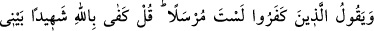
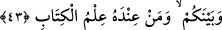

(s.a.)’in sözlerini duyacak kadar diriltmiştir.
Ebû Leheb Mekke’de kalmıştı. Kureyş’in Bedir’de uğradığı hezîmetin haberi
kendisine geldikten sonra birkaç gün yaşadı.
Ebû Leheb’e bir çeşit veba olan adese ârız olmuş ve ölümüne sebebiyet vermişti.
Ancak yakınları onun için bir mezar kazmayıp cesedini bir duvara yaslamışlar ve
duvarın arkasından üzerine taşlar atarak o şekilde gömmüşlerdi. Çünkü adese,
Arapların uğursuz saydığı ve son derece bulaşıcı bir hastalık olarak gördükleri bir
çıbandı.
İşte Ebû Leheb’e bu illet ârız olunca çocukları bile ondan uzaklaştı. Ölümünden sonra
cenâzesine gömmek için kimse el sürmedi. Öylece üç gün bekledi. Fakat iyice kokunca
insanların kendileri hakkında ileri geri konuşacağından endişe ederek zikredilen şekilde
gömmek zorunda kaldılar.
Bir rivâyete göre ise bir çukur kazıp sopalarla iterek oraya attılar. Sonra da üzerine
gömünceye dek uzaktan taş attılar.
O da böylece Hz. Peygamber’e kurduğu tuzakların karşılığını görmüş oldu. Âişe
(r.anhâ), onun gömülü olduğu yerden geçerken yüzünü kapatmıştır.
en-Nûr’da der ki: “Bugün Bâb-ı Şebîke’nin dışındaki taşlanan kabir, Ebû Leheb’in
kabri değildir. Kâbe’ye pislik süren iki adamın kabridir. Bu hâdise Abbâsîler
zamanında cereyân etmiştir. Sabahleyin insanlar geldiklerinde Kâbe’ye pislik
bulaştırılmış olduğunu görünce kimin yaptığını araştırmışlar ve birkaç gün sonra bu iki
adamı yakalamışlardır. Adamlar yakalanmalarının ardından orada asılmışlar ve
günümüze dek taşlanagelmişlerdir. İşte bu, onların dünyadaki cezâsıdır. Cenab-ı Hak
bunlara böyle bir tuzak kurmuştur. Sen Allah’ın dinini ve o dinin ehli hayırlı âlimleri ve
muttakîleri alaya alanların cezâsını buna kıyâs et.
Ömrünün sonlarında şeyhim senedim Osman Fazlî Efendi hazretlerine de bir vezir
bir tuzak kurdu. Ancak Allah Teâlâ bu vezîri şeyhimden birkaç gün önce vefat ettirdi. O
vezîr rüyada başı eğik olarak görüldü, şeyh hazretlerine yaptıklarından utandığından
başını kaldıramıyordu.
Allah’ım, bizi kötü hâlden ve kötü amellerden koru, muhâfaza buyur.
43. Kâfir olanlar: “Sen rasûl olarak gönderilmiş bir kimse değilsin.” diyorlar. De
ki: “Benimle sizin aranızda şâhid olarak Allah ve yanında Kitab’ın bilgisi olan
(peygamber) yeter.”
“Kâfir olanlar:” Yani, Mekke müşrikleri veya âyetin Medîne’de inmiş olması